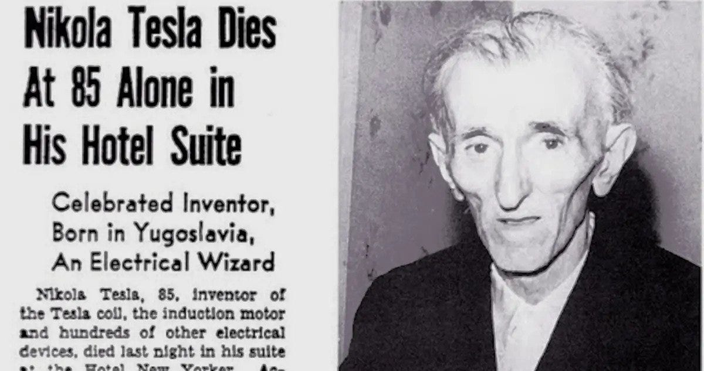
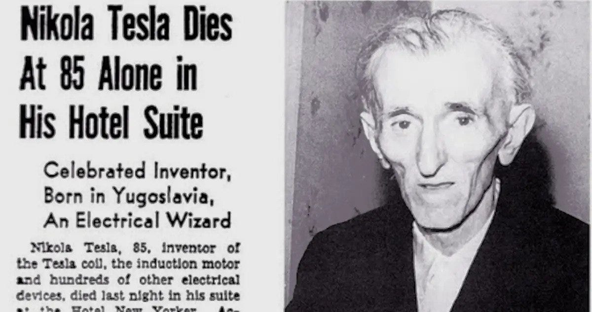

What to choose - Academia or Corporate?
- from a biased perspective from someone who is pursuing academiaAcademia Publishing Corporate

What's My Future Career Choice? This is a question I often get from my peers. Over the years, my perspective has evolved, and I now lean more toward academia. Why?
I'm a B.Sc. graduate, which technically means I'm not an engineer. So, pursuing academia seems like a more likely path. What's driven me so far are “willpower” and “hope”—the belief that I can solve any problem if I dedicate enough time and effort. The reward that comes from overcoming these challenges makes it all worthwhile.
Someone once asked me: If you could go back two years, with all the experience you've gained from your PhD, would you still choose to pursue it? Without hesitation, my answer is Yes!


Why Not Corporate? I don't feel inclined toward a corporate career at this stage of my life for several reasons. First and foremost, when you develop something in the corporate world (e.g., as a software developer), you rarely get personal recognition. The company owns your work, and you contribute just a fraction of the code. While your contributions may be widely used, you lack ownership and visibility. Your name won't be remembered unless you work in open-source, like Linus Torvalds or David Heinemeier Hansson. Some corporate jobs offer higher pay, work-life balance, and enjoyable weekends. But eventually, the 9-to-5 grind becomes monotonous. As the saying goes, even if you eat a delicacy every day, it becomes bland. The excitement fades over time, especially in your 20s and 30s, leading to intellectual and personal stagnation. Your growth becomes dependent on the company's direction.

Doing an average corporate job is much worse than being an average professor in academia. While corporate jobs pay more, an excellent academic can eventually out-earn software developers at top companies. Research positions at giants like Meta, Google, or Microsoft differ but often have limitations. Your research must align with their interests, and research teams are frequently the first to be cut during resource constraints.
Academia, on the other hand, fosters continuous intellectual growth. There are so many sub-domains I want to explore, and academia offers the flexibility to do so. Additionally, you meet new people through conferences and collaborations rather than seeing the same faces daily in a small team. The routine of a 9-to-5 job would be draining for me. I need the flexibility to work on my own terms, without rigid oversight, as long as I produce results.

Most of today's research follows trends rather than establishing new foundations, driven by the pressure to publish quickly. Foundational research takes years and often fails, like Geoffrey Hinton's work on Restricted Boltzmann Machines before developing backpropagation. In research, you sometimes must choose between what works and what's experimental but might fail. Unfortunately, companies push research that profits them rather than what advances knowledge or human curiosity. This is the reason, a novel idea may take time to be accepted by the community, and researchers push themselves in the general hype, which creates a bubble/trend that changes over time.
Some people will dislike your work in academia simply because they don't see their reflections on it. Others will appreciate the “art” of your research. You will face rejection, even after giving your best effort. But you have to keep pushing. The eyes of an artist are needed to appreciate art, and most people are not artists—they follow trends or what's popular. People outside your field may criticize you, but that's part of the process.
Reviewers, too, may be less qualified than you, but they can reject your work. There are flaws in the review system, such as double-blind papers being recognizable when authors post on arXiv. Certain groups or styles are more recognizable and exclusive, creating bias. However, the pursuit of knowledge must continue despite these flaws.
The Cost of Academia
Choosing academia requires sacrifices. As my faculty advisor, Prof. Pushpak, once said, “In academia, you'll see your corporate friends getting promoted, married, earning triple your salary, enjoying weekends, and traveling—while you're working hard, often on weekends, before deadlines, refining work that only a few will recognize.” It can be demoralizing, but your hard work will pay off in the long run. After your PhD, you'll be in a better position, and those years of sacrifice will make sense.
Academia is full of highs and lows, but persistence is vital. From a young age, the education system has often felt broken. I wonder if I would have been better off focusing on the philosophy of the subjects that I was learning rather than memorizing its contents for the sake of marks and degree certificates. Interestingly, the education system has put the younger generation into this rat race of marks and degrees, leading to the devaluation of education. The core philosophy of the education system should shift from the pursuit of "high rankings" to a curiosity-driven, student-centered approach that focuses on nurturing each student's growth, free from unnecessary peer pressure, with the goal of advancing humanity.
 

The world is forever evolving, and the progress of the human race is based on change. Change in perspective, change in ideology, change in technology, etc. Like previously, we were hunter-gatherers, but now we have created a civilization that works in a coordinated way, which is the main reason the human race has survived till now, even when facing large-scale wars, disasters, famines, etc. As the Sanskrit shloka says, "स्वदेशे पूज्यते राजा, विद्वान सर्वत्र पूज्यते," which means a king is worshipped in his own country whereas the “Pundit”/scholar is worshipped everywhere he goes. Do you want to be a corporate king who gets worshipped by his juniors for promotion, or do you want to be a scholar who is recognized worldwide?
Special thanks to Chandan, Sourav Rout and Nilayan for their valuable feedback. Also, images are collected From various sources from Google and some are generated, sorry for not finding the references!